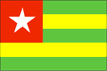
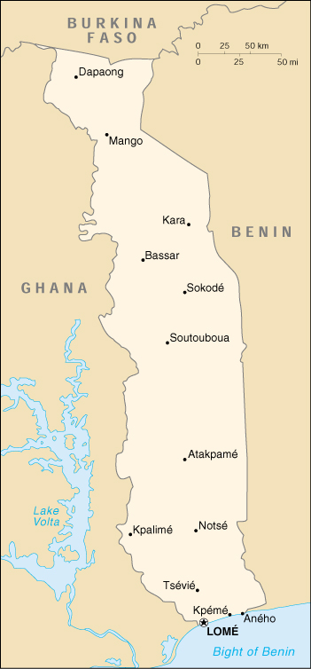

{kind=link}


| Togo |  |
|
|  | |
| Introduction |
Background: French Togoland became Togo in 1960. Despite the facade of multiparty rule instituted in the early 1990s, the government continues to be dominated by the military, which has maintained its power almost continuously since 1967.
| Geography |
Location: Western Africa, bordering the Bight of Benin, between Benin and Ghana
Geographic coordinates: 8 00 N, 1 10 E
Map references: Africa
Area:
total:
56,785 sq km
land:
54,385 sq km
water:
2,400 sq km
Area - comparative: slightly smaller than West Virginia
Land boundaries:
total:
1,647 km
border countries:
Benin 644 km, Burkina Faso 126 km, Ghana 877 km
Coastline: 56 km
Maritime claims:
exclusive economic zone:
200 nm
territorial sea:
30 nm
Climate: tropical; hot, humid in south; semiarid in north
Terrain: gently rolling savanna in north; central hills; southern plateau; low coastal plain with extensive lagoons and marshes
Elevation extremes:
lowest point:
Atlantic Ocean 0 m
highest point:
Mont Agou 986 m
Natural resources: phosphates, limestone, marble, arable land
Land use:
arable land:
38%
permanent crops:
7%
permanent pastures:
4%
forests and woodland:
17%
other:
34% (1993 est.)
Irrigated land: 70 sq km (1993 est.)
Natural hazards: hot, dry harmattan wind can reduce visibility in north during winter; periodic droughts
Environment - current issues: deforestation attributable to slash-and-burn agriculture and the use of wood for fuel; recent droughts affecting agriculture
Environment - international agreements:
party to:
Biodiversity, Climate Change, Desertification, Endangered Species, Law of the Sea, Marine Dumping, Nuclear Test Ban, Ozone Layer Protection, Ship Pollution, Tropical Timber 83, Tropical Timber 94, Wetlands
signed, but not ratified:
none of the selected agreements
| People |
Population:
5,018,502
note:
estimates for this country explicitly take into account the effects of excess mortality due to AIDS; this can result in lower life expectancy, higher infant mortality and death rates, lower population and growth rates, and changes in the distribution of population by age and sex than would otherwise be expected (July 2000 est.)
Age structure:
0-14 years:
46% (male 1,161,610; female 1,153,877)
15-64 years:
51% (male 1,254,437; female 1,327,306)
65 years and over:
3% (male 53,101; female 68,171) (2000 est.)
Population growth rate: 2.7% (2000 est.)
Birth rate: 38.02 births/1,000 population (2000 est.)
Death rate: 11.18 deaths/1,000 population (2000 est.)
Net migration rate: 0.16 migrant(s)/1,000 population (2000 est.)
Sex ratio:
at birth:
1.03 male(s)/female
under 15 years:
1.01 male(s)/female
15-64 years:
0.95 male(s)/female
65 years and over:
0.78 male(s)/female
total population:
0.97 male(s)/female (2000 est.)
Infant mortality rate: 71.55 deaths/1,000 live births (2000 est.)
Life expectancy at birth:
total population:
54.69 years
male:
52.75 years
female:
56.7 years (2000 est.)
Total fertility rate: 5.5 children born/woman (2000 est.)
Nationality:
noun:
Togolese (singular and plural)
adjective:
Togolese
Ethnic groups: native African (37 tribes; largest and most important are Ewe, Mina, and Kabre) 99%, European and Syrian-Lebanese less than 1%
Religions: indigenous beliefs 70%, Christian 20%, Muslim 10%
Languages: French (official and the language of commerce), Ewe and Mina (the two major African languages in the south), Kabye (sometimes spelled Kabiye) and Dagomba (the two major African languages in the north)
Literacy:
definition:
age 15 and over can read and write
total population:
51.7%
male:
67%
female:
37% (1995 est.)
| Government |
Country name:
conventional long form:
Togolese Republic
conventional short form:
Togo
local long form:
Republique Togolaise
local short form:
none
former:
French Togoland
Data code: TO
Government type: republic under transition to multiparty democratic rule
Capital: Lome
Administrative divisions: 5 regions (regions, singular - region); De La Kara, Des Plateaux, Des Savanes, Du Centre, Maritime
Independence: 27 April 1960 (from French-administered UN trusteeship)
National holiday: Independence Day, 27 April (1960)
Constitution: multiparty draft constitution approved by High Council of the Republic 1 July 1992; adopted by public referendum 27 September 1992
Legal system: French-based court system
Suffrage: NA years of age; universal adult
Executive branch:
chief of state:
President Gen. Gnassingbe EYADEMA (since 14 April 1967)
head of government:
Prime Minister Eugene Koffi ADOBOLI (since NA May 1999)
cabinet:
Council of Ministers appointed by the president and the prime minister
elections:
president elected by popular vote for a five-year term; election last held 21 June 1998 (next to be held NA 2003); prime minister appointed by the president
election results:
Gnassingbe EYADEMA reelected president; percent of vote - Gnassingbe EYADEMA 52.13%, Gilchrist OLYMPIO 34.12%, other 13.75%
Legislative branch:
unicameral National Assembly (81 seats; members are elected by popular vote to serve five-year terms)
elections:
last held 21 March 1999 (next due to be held NA 2004)
election results:
percent of vote by party - NA; seats by party - RPT 77, independents 2, vacant 2
note:
Togo's main opposition parties boycotted the election because of EYADEMA's alleged manipulation of 1998 presidential polling; since March of 1999, opposition parties have entered into negotiations with the president over the establishment of an independent electoral commission and a new round of legislative elections for sometime in 2000
Judicial branch: Court of Appeal or Cour d'Appel; Supreme Court or Cour Supreme
Political parties and leaders:
Action Committee for Renewal or CAR [Yawovi AGBOYIBO]; Coordination des Forces Nouvelles or CFN [Joseph KOFFIGOH]; Democratic Convention of African Peoples or CDPA [Leopold GNININVI]; Party for Democracy and Renewal or PDR [Zarifou AYEVA]; Patriotic Pan-African Convergence or CPP [Edem KODJO]; Rally of the Togolese People or RPT [President Gen. Gnassingbe EYADEMA]; Union of Forces for Change or UFC [Gilchrist OLYMPIO (in exile), Jeane-Pierre FABRE, general secretary in Togo]; Union of Independent Liberals or ULI [Jacques AMOUZO]
note:
Rally of the Togolese People or RPT, led by President EYADEMA, was the only party until the formation of multiple parties was legalized 12 April 1991
International organization participation: ACCT, ACP, AfDB, CCC, ECA, ECOWAS, Entente, FAO, FZ, G-77, IBRD, ICAO, ICC, ICFTU, ICRM, IDA, IFAD, IFC, IFRCS, ILO, IMF, IMO, Intelsat, Interpol, IOC, ITU, MINURSO, MIPONUH, NAM, OAU, OIC, OPCW, UN, UNCTAD, UNESCO, UNIDO, UPU, WADB, WAEMU, WCL, WFTU, WHO, WIPO, WMO, WToO, WTrO
Diplomatic representation in the US:
chief of mission:
Ambassador Akoussoulelov BODJONA
chancery:
2208 Massachusetts Avenue NW, Washington, DC 20008
telephone:
[1] (202) 234-4212
FAX:
[1] (202) 232-3190
Diplomatic representation from the US:
chief of mission:
Ambassador Brenda Brown SCHOONOVER
embassy:
Rue Pelletier Caventou and Rue Vauban, Lome
mailing address:
B. P. 852, Lome
telephone:
[228] 21 77 17, 21 29 91 through 21 29 94
FAX:
[228] 21 79 52
Flag description: five equal horizontal bands of green (top and bottom) alternating with yellow; there is a white five-pointed star on a red square in the upper hoist-side corner; uses the popular pan-African colors of Ethiopia
| Economy |
Economy - overview: This small sub-Saharan economy is heavily dependent on both commercial and subsistence agriculture, which provides employment for 65% of the labor force. Cocoa, coffee, and cotton together generate about 30% of export earnings. Togo is self-sufficient in basic foodstuffs when harvests are normal, with occasional regional supply difficulties. In the industrial sector, phosphate mining is by far the most important activity, although it has suffered from the collapse of world phosphate prices and increased foreign competition. Togo serves as a regional commercial and trade center. The government's decade-long effort, supported by the World Bank and the IMF, to implement economic reform measures, encourage foreign investment, and bring revenues in line with expenditures has stalled. Political unrest, including private and public sector strikes throughout 1992 and 1993, jeopardized the reform program, shrunk the tax base, and disrupted vital economic activity. The 12 January 1994 devaluation of the currency by 50% provided an important impetus to renewed structural adjustment; these efforts were facilitated by the end of strife in 1994 and a return to overt political calm. Progress depends on following through on privatization, increased openness in government financial operations (to accommodate increased social service outlays), and possible downsizing of the military, on which the regime has depended to stay in place. Lack of aid, along with depressed cocoa prices, generated a 1% fall in GDP in 1998, with growth resuming in 1999. Assuming no deterioration of the political atmosphere, growth should rise to 5% a year in 2000-01.
GDP: purchasing power parity - $8.6 billion (1999 est.)
GDP - real growth rate: 4% (1999 est.)
GDP - per capita: purchasing power parity - $1,700 (1999 est.)
GDP - composition by sector:
agriculture:
42%
industry:
21%
services:
37% (1997)
Population below poverty line: 32% (1987-89 est.)
Household income or consumption by percentage share:
lowest 10%:
NA%
highest 10%:
NA%
Inflation rate (consumer prices): 3% (1999 est.)
Labor force: 1.538 million (1993 est.)
Labor force - by occupation: agriculture 65%, industry 5%, services 30% (1998 est.)
Unemployment rate: NA%
Budget:
revenues:
$232 million
expenditures:
$252 million, including capital expenditures of $NA (1997 est.)
Industries: phosphate mining, agricultural processing, cement; handicrafts, textiles, beverages
Industrial production growth rate: NA%
Electricity - production: 90 million kWh (1998)
Electricity - production by source:
fossil fuel:
93.33%
hydro:
6.67%
nuclear:
0%
other:
0% (1998)
Electricity - consumption: 434 million kWh (1998)
Electricity - exports: 0 kWh (1998)
Electricity - imports:
350 million kWh (1998)
note:
imports electricity from Ghana
Agriculture - products: coffee, cocoa, cotton, yams, cassava (tapioca), corn, beans, rice, millet, sorghum; livestock; fish
Exports: $400 million (f.o.b., 1999)
Exports - commodities: cotton, phosphates, coffee, cocoa
Exports - partners: Canada, Philippines, Ghana, France (1998)
Imports: $450 million (f.o.b., 1999)
Imports - commodities: machinery and equipment, foodstuffs, petroleum products
Imports - partners: Ghana, France, Cote d'Ivoire, China (1998)
Debt - external: $1.3 billion (1997)
Economic aid - recipient: $201.1 million (1995)
Currency: 1 Communaute Financiere Africaine franc (CFAF) = 100 centimes
Exchange rates:
Communaute Financiere Africaine francs (CFAF) per US$1 - 647.25 (January 2000), 615.70 (1999) 589.95 (1998), 583.67 (1997), 511.55 (1996), 499.15 (1995)
note:
since 1 January 1999, the CFAF is pegged to the euro at a rate of 655.957 CFA francs per euro
Fiscal year: calendar year
| Communications |
Telephones - main lines in use: 22,000 (1995)
Telephones - mobile cellular: NA
Telephone system:
fair system based on network of microwave radio relay routes supplemented by open-wire lines and cellular system
domestic:
microwave radio relay and open-wire lines for conventional system; cellular system has capacity of 10,000 telephones
international:
satellite earth stations - 1 Intelsat (Atlantic Ocean) and 1 Symphonie
Radio broadcast stations: AM 2, FM 9, shortwave 4 (1998)
Radios: 940,000 (1997)
Television broadcast stations: 3 (plus two repeaters) (1997)
Televisions: 73,000 (1997)
Internet Service Providers (ISPs): 1 (1999)
| Transportation |
Railways:
total:
525 km (1995)
narrow gauge:
525 km 1.000-m gauge
Highways:
total:
7,520 km
paved:
2,376 km
unpaved:
5,144 km (1996 est.)
Waterways: 50 km Mono river
Ports and harbors: Kpeme, Lome
Merchant marine:
total:
2 ships (1,000 GRT or over) totaling 56,332 GRT/97,443 DWT
ships by type:
bulk 1, cargo 1 (1999 est.)
Airports: 9 (1999 est.)
Airports - with paved runways:
total:
2
2,438 to 3,047 m:
2 (1999 est.)
Airports - with unpaved runways:
total:
7
914 to 1,523 m:
5
under 914 m:
2 (1999 est.)
| Military |
Military branches: Army, Navy, Air Force, Gendarmerie
Military manpower - availability:
males age 15-49:
1,131,451 (2000 est.)
Military manpower - fit for military service:
males age 15-49:
593,589 (2000 est.)
Military expenditures - dollar figure: $27 million (FY96)
Military expenditures - percent of GDP: 2% (FY96)
| Transnational Issues |
Disputes - international: none
Illicit drugs: transit hub for Nigerian heroin and cocaine traffickers